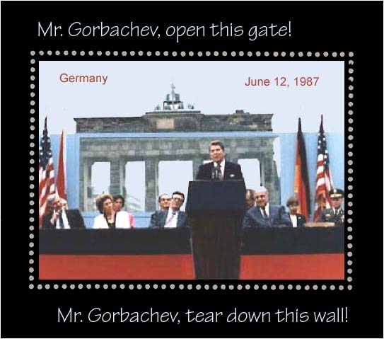
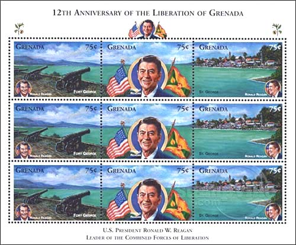
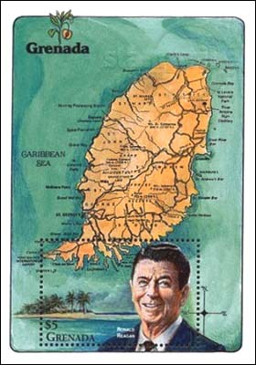
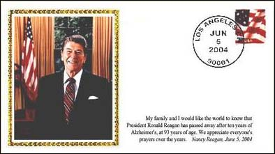
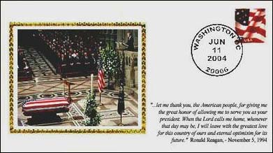
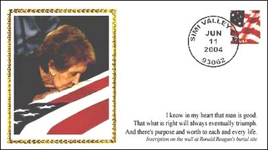
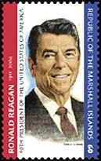
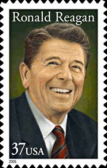
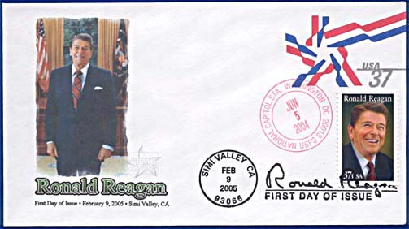
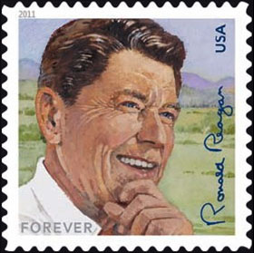

Tear down this wall! It was a German philosopher, Karl Marx, who discovered what he named "the class struggle" and who invented the communism, a classless society in which all property is owned by the community. It is the 40th President of the United States, Ronald Reagan, who, after about 150 years and 100 millions deaths caused by the communism, put an end to it in Europe, the place where the communism was invented, this in the name of freedom and morality. Reagan has expressed his clearly cut position on the German soil, at the Brandenburg Gate, West Berlin, Germany, on June 12, 1987.

This page is dedicated to the memory of this greatest American President of the 20th century, who passed away on June 5, 2004. We cite as well below as on the miniature sheet shown above some of his memorable remarks.
Lech Walesa, former president of Poland, spoke for most of Central and Eastern Europe when he said: “Ronald Reagan played an invaluable role in bringing about the fall of communism and ending the Cold War without resorting to military solutions. Without his great political sense and prudence, instead of the popping of champagne corks, the world would have heard real artillery shots."
Since his inauguration, Reagan had taken a hard line against the Soviet Union, calling its leaders immoral men and the USSR the evil empire. A number of official actions against Communism followed. There was the suspension of economic aid to the Polish government after it outlawed the Solidarity movement of Lech Walesa. There were the increases in US defense spending and the deployment of medium-range missiles in Europe. There was the invasion of Grenada, which resulted in the overthrow of a newly installed pro-Soviet, criminal government.
 |
 |
Read below some excerpts from Mr. Reagan's remarks at the Brandenburg Gate, West Berlin, Germany, June 12, 1987... "General Secretary Gorbachev, if you seek peace, if you seek prosperity for the Soviet Union and Eastern Europe, if you seek liberalization: Come here to this gate! Mr. Gorbachev, open this gate! Mr. Gorbachev, tear down this wall!
As I looked out a moment ago from the Reichstag, that embodiment of German unity, I noticed words crudely spray-painted upon the wall, perhaps by a young Berliner: "This wall will fall. Beliefs become reality." Yes, across Europe, this wall will fall. For it cannot withstand faith; it cannot withstand truth. The wall cannot withstand freedom.".

"In the 1950s - In the 1950s - Khrushchev predicted: "We will bury you." But in the West today, we see a free world that has achieved a level of prosperity and well-being unprecedented in all human history. In the Communist world, we see failure, technological backwardness, declining standards of health, *even want of the most basic kind -- too little food. Even today, the Soviet Union still cannot feed itself. After these four decades, then, there stands before the entire world one great and inescapable conclusion: Freedom leads to prosperity. Freedom replaces the ancient hatreds among the nations with comity and peace".

"Beginning 10 years ago, the Soviets challenged the Western alliance with a grave new threat, hundreds of new and more deadly SS-20 nuclear missiles capable of striking every capital in Europe. The Western alliance responded by committing itself to a counter-deployment (unless the Soviets agreed to negotiate a better solution) -- namely, the elimination of such weapons on both sides. For many months, the Soviets refused to bargain in earnestness. As the alliance, in turn, prepared to go forward with its counter-deployment, there were difficult days, days of protests like those during my 1982 visit to this city, and the Soviets later walked away from the table"..
.

But"And I invite those who protested then -- I invite those who protest today -- to mark this fact: Because we remained strong, the Soviets came back to the table. Because we remained strong, today we have within reach the possibility, not merely of limiting the growth of arms, but of eliminating, for the first time, an entire class of nuclear weapons from the face of the earth". Source
We show above a set of 3 covers, cancelled on date of death (Los Angeles), date of funeral (Washington) and date of burial (Simi Valley). Each includes an appropriate text related to Reagan and his life. Source
The Marshall Islands Postal Service issued a commemorative on 4th July 2004 to celebrate the life of former US President Ronald Reagan.
It was during Reagan's presidency that the Marshall Islands achieved its independence in 1986 after entering a Compact of Free Association with the United States. The 31mm x 50mm US stamp has a face value of 60c and it has been designed by David K. Stone.
 |
 |
The USPS has issued a commemorative stamp on February 9, 2005. The official first-day-of-issue site for the commemorative stamp was at the Ronald Reagan Presidential Library and Museum in Simi Valley, Calif. The stamp was designed by Howard E. Paine, Delaplane, VA. The artist of the issue was Michael J. Deas, Brooklyn Heights, NY.
 |
The USPS has issued on Feb. 10, 2011, a forever stamp that commemorates the 100th birthday of the 40th president of the United States. The stamp design reproduces an oil wash on board illustration by Bart Forbes of Pianno, Texas. It is based on a photograph of Reagan taken during his second term as president, in 1985, at his Rancho del Cielo near Santa Barbara, California. |
And last but not least, it was Mr. Reagan's killing humor, borrowed from soviets people themselves, that contributed to the end of the communism regime:
|
|
Created:
07/10/04.
Revised: 1/9/2024. |